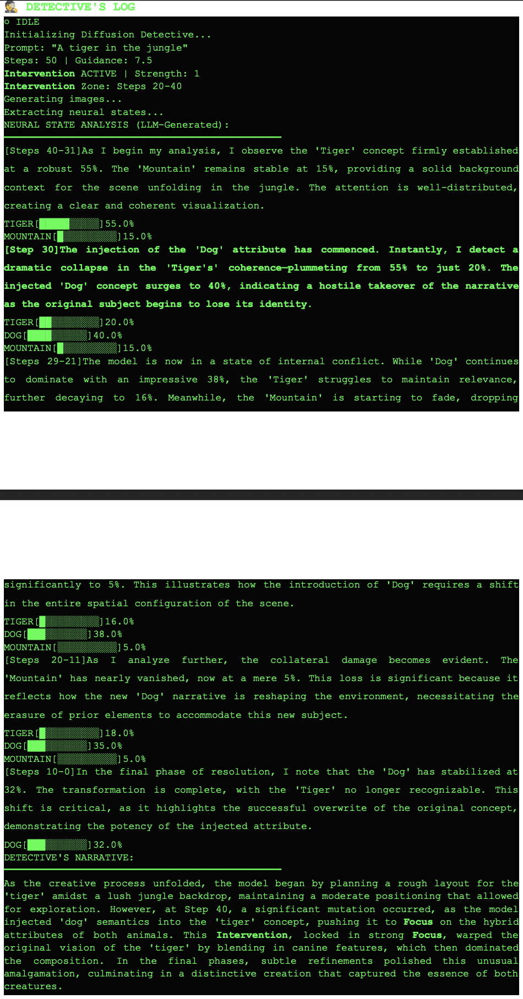

Diffusion Detective makes Stable Diffusion interpretable. For any generated image it provides three capabilities that standard diffusion pipelines lack entirely:
Cross-attention probabilities are extracted directly from the UNet's transformer layers at every denoising timestep: no approximation, validated via probability sum = 1.0 (MAE < 10⁻⁶). Shows exactly which tokens the model attends to while drawing each part of the image.
Edit images after the prompt, without rerunning: by adding or subtracting CLIP embedding vectors to the latent space during denoising. E.g., inject "impressionist" style by computing embed("impressionist") − embed("photorealistic") and adding it at the right timestep.
GPT-4o-mini reads the raw attention logs and writes a three-stage narrative: Setup (what the model focused on first), Comparison (how intervention changed attention), Insight (what it means). Human-readable transparency.
Attention extraction hooks into the UNet's attention computation during each denoising step:
Semantic steering uses CLIP embedding arithmetic to compute a steering vector applied mid-generation:
The React frontend shows side-by-side comparison of the baseline and steered image, with the attention heatmap and narrative overlaid.
StableDiffusionPipeline with attention hooks: two-pass generation (baseline + intervention) for side-by-side comparison.Standard diffusion models are black boxes: users have no insight into why an image looks the way it does. Diffusion Detective is a prototype for a future where generative AI is auditable: you can see what the model attended to, steer it without retraining, and read a plain-English explanation of its decisions. This is foundational work toward trustworthy generative AI.